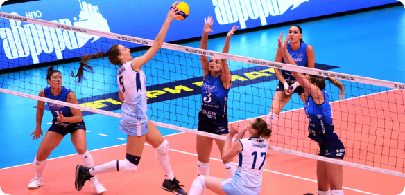

МУЖСКАЯ
СУПЕРЛИГА
21.12.19 Сб
Чемпионат России 12 турДинамо ЛО
3:1
Урал
(25:23, 27:29, 25:19, 27:25)

14.12.19 Сб
Чемпионат России 12 турДинамо ЛО
0:3
Локомотив
(19:25, 21:25, 23:25)
07.12.19 Сб
Чемпионат России 12 турДинамо ЛО
3:1
Зенит
(26:24, 25:20, 15:25, 25:23)
ЖЕНСКАЯ
ЛИГА
26.12.19 Чт
Чемпионат России 6 турСеверянка-2
3:0
Балт.Волна
25.12.19 Ср
Чемпионат России 12 турСеверянка-2
0:3
Балт.Волна
25.12.19 Ср
Чемпионат России 12 турСеверянка-2
3:0
Балт.Волна
Молодежная
СУПЕРЛИГА
15.12.19 Вс
3 тур ЯрославльДинамо ЛО-2
0:3
Яр.Медведи
14.12.19 Сб
3 тур ЯрославльБеркуты Урала
1:3
Динамо ЛО-2
13.12.19 Пт
Чемпионат России 12 турДинамо ЛО-2
0:3
Белогорье-2
новости
25.12.19 Среда
22:15:35
Маркус Бёме вызван в сборную Германии
24.12.19 Вторник
18:30:03
Волейболисты Ленобласти подготовили подарки
22.12.19 Воскресенье
12:04:56
Александр Волков: “Ходил с улыкой всю игру”
20.12.19 Пятница
12:56:34
Суперлига Париматч, 12 тур
17.12.19 Вторник
11:48:20
Молодежная лига, 3 тур. Опыт, сын ошибок тру...
16.12.19 Понедельник
14:46:10
14-15 декабря прошли соревнования среди вете...
14.12.19 Суббота
18:06:03
“47 CUP” Областные соревнования по волейболу
14.12.19 Суббота
13:45:22
С официальным визитом в гости к “динамо ЛО” ...
ближайшие
соревнования
14.12.19 Сб
Академия ПлатоноваДинамо
Локомотив
Лен область
Новосибирск
14.12.19 Сб
Зенит АренаДинамо
Локомотив
Лен область
Новосибирск
14.12.19 Сб
Стадион ДинамоДинамо
Локомотив
Лен область
Новосибирск
